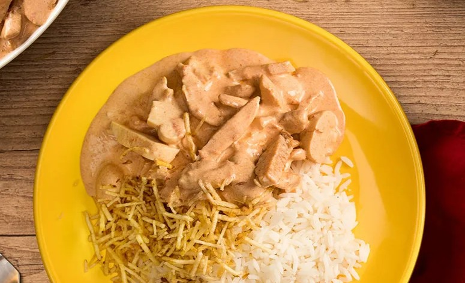

Strogonoff de Frango Sadia
Receita de como fazer um Strogonoff de Frango

Ingredientes
- 1 colher (sobremesa) de azeite
- 400g de Tiras de Frango
- 1 colher (café) de sal
- 1 colher (café) de páprica picante
- 3 colheres (sopa) de ketchup
- 1 colher (sopa) de mostarda
- 1 colher (sopa) de molho inglês
- 1 xícara (chá) de champignons cortados ao meio
- 1 lata de creme de leite
- 3 colheres (sopa) de cebola cortada em cubos pequenos
- 1 dente de alho cortado em cubos pequenos
Modo de preparo
- Em uma panela, aqueça o azeite e refogue a cebola e o alho, em seguida acrescente as tiras de frango;
- Tempere com o sal e com a páprica;
- Refogue e adicione a mostarda, o ketchup, o molho inglês e os champignons;
- Cozinhe por mais 1-2 minutos e junte o creme de leite (não deixe ferver, apenas aquecer);
- Sirva ainda quente.
Informações Nutricionais
| Quantidade por porção |
| 1/2 unidade (250 g) |
| Energia |
1284 kJ / 307 kcal |
| Carboidratos |
9,30 g |
| Proteínas |
20,00 g |
| Gorduras totais |
21,00 g |
| Gorduras saturadas |
12,00 g |
| Fibras |
2,5 g |
| Sódio |
1337 mg |